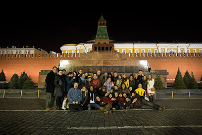

17
Moscowknot 2017
*Grzesznik *Medved' *Jack Daniels *Alexandra Kiki *Unlife *MaestroBD *Vlada & Falco *Felix Ruckert & Lahtnor *Nawasabi *Psiheya *Karol *Jaeger *Lahtnor *Georg *Mosafir *VitAlKimiya *LiSiTsyn *Shigonawa
/ Videois a major annual international bondage festival has gathered on its stage some of the greatest riggers of nowadays and we are excited to expand the borders further and to host this year our old friends as well as masters and models, who have never performed in Moscow before.
The dedicated organisational team will offer maximum assistance to our international visitors to ensure their stay is untroubled. Stay tuned for further updates and do not hesitate to drop us a line in case of any questions. moscowknot@gmail.com. We are impatiently waiting for You!

 Medved & Mia
Medved & MiaRussia. Moscow
My acquaintance with bondage took place at the first bondage fest in 2007 - there I saw this practice personaly for the first time. Since that time it has always been present in my life. I didn't have any teachers, whom I am able to name, but there are some masters, whose seminars I have visited for those years that I was in bondage personaly. They are: AlekZander, WykD Dave, Riccardo Wildties and Bruce Esinem. Besides, I try to examine every new tie or type of hanging. The central thing in bondage is the interaction between a master and his model, in my opinion. There can be different results of this interaction: pain, pleasure, balancing somewhere between sensuality and sadism, orgasm - the range is wide. I can't stay only indifference. The beauty of tying and aesthetics of ropes is pleasant for me, but not a necessary consequence of such a "dialogue". My shows and actions could be seen at such large events as BDSM FISHING 2011, 2012 (Moscow), BDSM CASTLE (Moscow), RopeFest (St.Petersburg), and of course MoscowKnot, which scene I 'll visit this year with great pleasure and with a new idea.
 Georg & Nadezhda
Georg & NadezhdaRussia. Moscow
Georg believes that bondage is beautiful when it is full of sincerity, passion, dizzying drive. Even if the technic is perfect, bondage can still be easily ruined by fake emotions. The most essential quality of a rigger is recognizability, his own style, when we can define who is the author of the ties with a single photo. Moscow Knot for me is a festival, a big show, and all the participants become a family in these days, and it is maybe the only place to see a large number of different styles. Moscow Knot always has a welcome surprise for us with something new and outstanding.
 Odin & Mickey
Odin & Mickey Izrael. Tel-Aviv
In 2014 there was my first time I got into the world of ropes. At that moment I wished for something new, unexplored. Suddenly I dived into such a phenomenon as bondage. I watched Akira Naka and Randa May’s videos and understood clearer that I desired to experience these emotions myself, which had the masters during their sessions. More over I was eager to learn how to give such bright emotions to my partner. I studied tying by trial and error, gradually realizing that ropes are able to give you great power. Besides I intended to discover every knot by my mind and to feel it by my heart. In my opinion bondage is one of the ways to communicate with a woman. Ropes can make something that words can’t do, and you don’t always need words. We have a proverb: there is no limit of perfection. I am sure it refers to bondage too: there are no bounds of developing, there is always something to learn.
 GanRaptor
GanRaptorPoland
GanRaptor is a rigger with many years of experience. He has confronted and developed his skills at numerous workshops in Germany, Denmark and Italy. Since 2012, he has been running numerous shibari workshops in Poland and Denmark. He performs at shows presenting his own style of shibari firmly rooted in a traditional Japanese shibari, in which one can see echoes of hojo jutsu, but also sensuality and delicacy. Together with Slaanesh, his partner, they are the authors of the www.nawado.pl website which is a comprehensive textbook of shibari and bondage techniques. They are the precursors of shibari in Poland.
 DIRTY DREAZ
DIRTY DREAZGermany
Dirty dreaz life rituals
Little swastika is doing body rituals with hooks since 15 years. His way of shibari is pretty unique as he isn’t holding to any traditional rules and he uses the rope as addition to the much stronger hook ritual suspensions. It's more like a crazy wild and intense ritual than any classical shibari show.
Dirty dreaz shows are not really shows. Each time they go on stage they do a very intense ritual they can’ practice in this way before. With a combination of hooks and different techniques to cut down shibari or hook positions in a very radical way, the rite shows still a lot of gentle love and it’s kind of peaceful within itself.
 Philip Ann
Philip Ann France
Philip Ann is an artist passionate about Japanese art His first meeting with Haruki Yukimura Sensei in 2005 was decisive He spent several years "searching" for his own rope, then he decided to go to Japan frequently Study, watch, practice ,understand. Kinbaku is the school of humility, "Every model, every emotion, every moment are different, I remain an interpreter, not an innovator " "I received great influences from Japanese kinbakushis I thank them every day for their generosity, quality of their teaching, precious time they were to give me. I continue to take lessons in Japan with my Teacher " For the present, I regularly tie in a SM club in Paris. Cris & Chuchotements
 Tessin Doyama & Momosaki Yurina
Tessin Doyama & Momosaki YurinaJapan
Doyama Tessin It's been 14 years, since my first kinbaku show in 2005. I continue to perform many shows, and participate in Japanese adult videos as a rigger. Every human is born naked. We then learn to wear clothes in order to protect ourselves from walking the path of sticks and stones. With growth, you may get hurt by words and attitudes, said and done by people, you then learn to armor your hearts. Some may feel you need to put on more armor, and get crushed by the own weight you put on. All I want to tell them is, "At this moment, you don't have to feel the need to put on your armour. You are ok to take it off" - that is the basis of my kinbaku and BDSM. For those who are too strict and cannot forgive themselves for not being able to live a regular life you seek - I will give them punishment. For those who cannot accept their own pleasure, I will bondage them to unleash one's heart. Your heart at peace, is my happiness. Momosaki Yurina I started my career as a Japanese porn actress in 2015, then retired my agency in 2019. I am now a free-lance porn actress/model. Most of my videos I'm featured in are based on SM and kinbaku.
 Alexandra Kiki & Ostara
Alexandra Kiki & OstaraKazakhstan&St. Petersburg
Kazakhstan Ust-Kamenogorsk / St. Petersburg Russia Alexandra Kiki knows rope from both sides. She explores herself and others by weaving together knots, pain and sensuality of her beloved ropes. Her model Ostara is a really strong and emotional girl. Every time their bodies meet and ropes intertwine there is a deep immersion in an atmosphere of an intense relationship. ‘My rope is rough and tender at the same time, I like combining these feelings and sharing them with Ostara. Me an her - we experience the same emotions’.
 Влада и Фалько
Влада и ФалькоRussia.Moscow
Vlada and Falco are organizers of MoscowKnot and Bondage Time events in Moscow. This incredibly creative and productive alliance was formed more than seven years ago. Vlada practices rope bondage, flagellation and a variety of BD-practices. Falco is her partner who prefers extreme bondage. Their views on bondage, as a type of torture, surprisingly coincided, giving rise to a unique style - sensual, expressive, probing the limits of human capabilities. Vlada said in an interview that bondage is a significant, very important part of their life, the process often is more interesting to me than the result. Usually goal of my action not only the tied body itself but the process of bondage, so infinite and exotic as growing bonsai. Since 2011, Vlad and Falco regularly participate in a variety of bondage events. Their performances were seen in several cities of Russia, as well as in Ukraine, the Czech Republic, Germany, France, Switzerland, Israel, Britain, Italy, Japan and Taiwan. Obsession of travelling connected with passion of photography. Many people have seen pictures of Falco, tied among the sights of the world capitals. Each trip of this couple is a creative act, in which not only the tied body, but also the usual objects of the city space are rethought.
 Xa Na & Behepa
Xa Na & BehepaItaly
Xa Na is an Italian woman who decided to move to Berlin some years ago to have the possibility to go deeper and do research about BDSM and its connection with bodywork. She practiced for many years Shiatsu and Aikido and these disciplines gave her some taste about the Japanese way to work with Energy. Her first love in BDSM has been Bondage and it still is. Since she arrived in Berlin her knowledge about Bondage has improved through a constant practice first in the world of the former Schwelle7 and actually at Studio 6x6. At the moment she does it also professionally as a Prodomme at Studio Lux in Berlin and her research is constantly moving ahead. Website: https://madamex.me/
 Alberto Noshibari & I-SHI
Alberto Noshibari & I-SHISpain
Alberto Noshibari Bondage scholar and trainer, he has attended to classes with the best masters in this discipline and he applies his experience in the artistic performances, the photographic works and the therapeutic use with his only tool: the ropes. He has exposed his job in shows and seminars for years all over Europe. Throughout these years he has been tying, he has gathered hundreds of experiences and he has reflected about the meaning that shibari, a concept inherited from Japanese culture, can have in our western space and time. During his public appearances he tries to convey rapport and intensity, and always building exciting moments, filled with strength and sensuality. CV - Formation: Yukimura Haruki, Akira Naka, Hajime Kinoko, Kazami Ranki, Osada Steve, Otonawa, Esinem, Matthias Grimme... - London Festival of the Art of Japanese Bondage in 2009, guest artist. - Encuentros de Cuerdas inEl Garage (Madrid) in 2008, organiser. - Cuerdas por Japón (aid project for the 2011 tsunami victims), co-organiser. - Ropes Nest in Barcelona, teacher. - To tie and to be tied in Madrid, teacher. - Shibari Students group in Barcelona, 2013. - Tatooatados photo project by Tentesion, rigger. - Shibari experience photo project by Tentesion, rigger and performer. - Autumn edition of Eurix in 2014 in Schwelle7, Berlín. - Triangular de Shibari, Sala Clamores, Madrid, November 2014, during the master Akira Naka first visit to Spain. - Autumn edition of Eurix in 2015 in Schwelle7, Berlín. - Art and Shibari in Barcelona, 2018-2019 co-organiser. - Sesiones Guarrantinas in Barcelona, 2018, guest artist. - Salón Erótico de Barcelona, 2018, teacher. - Shibari for Lovers, 2018, teacher. - NoShibari Methods in Barcelona, 2018-2019, coorganiser and teacher. - NoShibari Secret Club in Barcelona, 2018-2019, coorganizer and performer. I-SHI I was born in Barcelona in 1983, between 2014 and 2016 I made a brief incursion in artistic modelling. It was through the photographic project “Shibari Experience” how I met Alberto No Shibari, who brought me the opportunity to fully explore the world of ropes and to start collaborating in courses, talks, photo sessions and performances. By the end of 2017 I joined NoShibari Lab as a model and rigger, beggining an artistic and learning project in constant evolution in which I walk my own way deconstructing what I’ve learned to create new forms of teaching, communicate and tying. CV - Art and Shibari in Barcelona, 2018-2019 co-organiser. - Sesiones Guarrantinas in Barcelona, 2018, guest artist. - Salón Erótico de Barcelona, 2018, model. - Shibari for Lovers, 2018, model. - NoShibari Methods in Barcelona, 2018-2019, coorganiser and teacher. - NoShibari Secret Club in Barcelona, 2018-2019, coorganizer and performer.
 Araneo & Asya
Araneo & AsyaRussia.Sankt-Petersburg
My bondage is not for everyone. I’m looking for unlimited emotions, genuine and sincere. I do not tolerate falsity, even at the performances, it is always a full-fledged action and real emotions. My style includes minimalism, dynamics, candidness and sadism. I always try to avoid stock schemes, preferring elements invented by me and borrowed from the history of the Inquisition. P.S. There will be no beautiful picture or languid sighs. Prepare to see the victim and the executioner. However he is in love with his victim... But still the executioner.
 Ptic &Felina
Ptic &FelinaRussia. Moscow
My first experience with ropes was in 2009, when I was tied up by an experienced rigger. After a couple of years I started tying, too. At first it was my curiosity and a desire to let others feel what I felt, but soon I couldn’t imagine myself in any other role. Since I’m a creative person, I couldn’t pass up an opportunity to fulfill my ideas, so in 2012 I was already performing on stage. There’s of course a huge difference between doing bondage on stage and in private, each of these has its unique perks, and each is really valuable to me. ‘For me there’s nothing more precious than emotions. Rope is a method. From soft touches to intense torture. During a scene I give away everything I have. From pain to tenderness’.
 Nika Felichita & Volny veter
Nika Felichita & Volny veterRussia.Kazan
Nika Felichita is a founder of the BDSM community of Kazan, nicknamed ‘Sadist with eyes of a child’ in Ural. Every one of her performances is a small story with a deep meaning, creative ideas and humor, fancy costumes and spot-on music. It’s a real must-see
 Zmej & Zmejka
Zmej & ZmejkaRussia. Moscow
We are a BDSM-couple, together since 2011. For us bondage is an amazing mix of trust and power, submission and passion, pain and tenderness… We think that it’s all about emotional interaction and vibes between the partners, about getting, sharing and giving true emotion. We do lack both a big on-stage experience, and teachers, but we make up for it with a creative approach, improvisation and mutual love.
 Nick Freerider & Maria
Nick Freerider & Maria Russia. Moscow
Nick Freerider is a young shibari master from Moscow. “Rope is a conversation tool, a way to build a dialog between the master and the model. Every session is a deep journey not similar to each other. Shibari for me is an interaction, energy practice, the ability to reveal the model’s soul and the process of self-knowledge as well.” Until recently he was a musician. He usually creates bright images for his shows.
 Salamandr & Shandy
Salamandr & ShandyРоссия. Москва
Kinbaku for me is not just a connection inside a couple, it’s what the couple is created for, what it lives for, and it is the most strong rope. Its threads are communication, caring, family, understanding of life, personal philosophy, it’s what the couple is made of and each person is made of. When we take ropes, it’s the connection we take, we bind not with ropes, but with our thoughts, we ourselves are a turbulent stream of thought and emotion. By striking out particular feelings we put them into our partner, and if the partner accepts them, the rope becomes ‘heavy’, it squeezes the couple, making them closer and more honest to each other, this is how I see it.
 Karlson & Malуsh
Karlson & MalуshMinsk, Belarus
Karlson & Malysh are a BDSM couple formed 6 years ago. ‘I got into bodage thanks to Mikhail Balabanchik. What I care most in bondage is its functionality, in the first place, and also connecting with the partner. I like to experiment and seek new sensations. Bondage is lack of freedom for one partner and power over him for the other partner. Power to give pain and pleasure. Rope is a symbol of the said power, rope is a multipurpose tool: it can caress, bring a feeling of calm and safety, and the very next moment it can rip and torture. Rope is a conductor of emotion, and emotion is one of the main purposes of a session, both a private one, and a stage performance.’
The first lesson, I would like to see the students' TK. If it seems that there is no problem with their TK, I would like to teach them a special hip harness for suspension. Using that hip harness, I would like them to learn 2〜3 rotation. If possible, i'm hoping go from there to up side down with one leg. soonPrice: 4000 rub Start: Place: BDSM Club Predel
The second lesson For the students that participated my first lesson, I would like to teach suspension using "hishi-nawa" and continue with 2〜3 rotation. For the students that couldn't participate my first lesson, we start from the beginning. soonPrice: 4000 rub Start: Place: BDSM Club Predel
- History of Kinbaku - General rope safety and nerves damage - Communication between Top and Bottom - Before the session (consent), during the session ( safe word or safe signal), after the session - What types of ropes you can use - how to store it ( different way ) - single columm tie ( wrist , leg , ankle ) - double columm tie ( wrists , ankles) - Introduction of Kannuki ( cinch ) - How to play with one rope ( Ichi Nawa ) - Notion of flow , rythmn - How you can communicate with one rope - Notion about knots, frictions , tensions - How you can close and finish the rope - Gote shibari two ropes - Relaxing time and questions about the session Price: 3000 rub Start: Place: BDSM Club Predel
People who have notions of kinbaku - Checking about single and double columm tie - General rope safety and nerves damage - Communication between Top and Bottom - Before the session (consent), during the session ( safe word or safe signal), after the session - How to drive a rope ( exercices) - How you don't loose the tension ( exercices) - How you can communicate your intentions during the session - Ichi Nawa with frictions and closing rope - Floor tie and play with many ropes - Short Break to relaxing - Gote shibari with two and three ropes - Hip harness - Make the Gote in tension with a suspension main line - How to Check your model and all your ropes before continues - How to adjust your ropes and checking tension - Half suspension - How to manage the second line - communication with your model - How to endtie with emotions and intentions - Relaxing time and questions about Kinbaku Price: 3000 rub Start: Place: BDSM Club Predel
Shiatsu and Shibari are both disciplines born in Japan. They have in common, according to my experience, some traits and they can be complementary for others. When I first met the world of ropes I was already a Shiatsu therapist since several years, and concepts like vital energy, meridians, pressure resonated familiar in my mind and at that point I was looking for their expressive dimension, which in my opinion should have been not only strictly related to sickness and problems to face. You can’t do Shiatsu with ropes, that’s impossible, but through Shiatsu you can make experience of what means receiving and giving pressure, which parts of the body may have a correspondence and a resonance with some emotions and states of mind and how to work with it. In this workshop we will explore what are the common points between the world of ropes, the restrictions and the pressure and pressure points, we will work with the breath and try to go beyond the surface of our body. No previous experience is necessary, if possible bring your own ropes. Price: 3000 rub Start: Place: BDSM Club Predel
*Grzesznik *Medved' *Jack Daniels *Alexandra Kiki *Unlife *MaestroBD *Vlada & Falco *Felix Ruckert & Lahtnor *Nawasabi *Psiheya *Karol *Jaeger *Lahtnor *Georg *Mosafir *VitAlKimiya *LiSiTsyn *Shigonawa
/ VideoKazami Ranki* Rija Mae* La quarta corda* Red Lily* Andrea Ropes* MaestroBD* Gestalta* Edna & Anea* Psiheya* Jaeger* Alexandra K * LiSiTsin* Medved* Sergey Libido* Vlada & Falco*
/ Video 1 / Video 2Mai Randa * Otowaya Otonawa &* Nawasabi Semenawa * Scot Kinbaku * Andrea Ropes * Georg Barkas * Michael Ronsky * Ludmila Ropes * Nawashi Düsseldorf * Vlada & Falco * Jaeger * Mosafir * Kalahari * Medved * Lisitsin * Psiheya *
/ Video /PhilipAnn Debeaumond * Ludmila Metresa * Tougo * Shibari Circus * Shadow * Incognito * Akira Naka * Nawashi Kanna * Kamijoo Saki * Pilar LaOtra * Mosafir * Jaeger * Lisitsin * Vlada * Heretik Time Table
/ VideoWykD Dave * Xanoo *Naka Akira *Shin * Riccardo Wildties * Mosafir* Caroline * Tetsubishi *Medved*Yeger*Zenj* Stefano * Exmelin* Jack the Whipper* Incognito * Tougo Vlada
/ Video